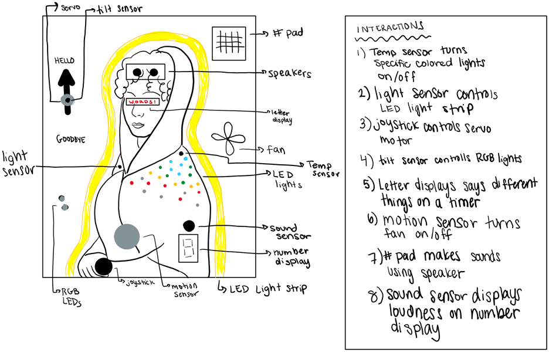
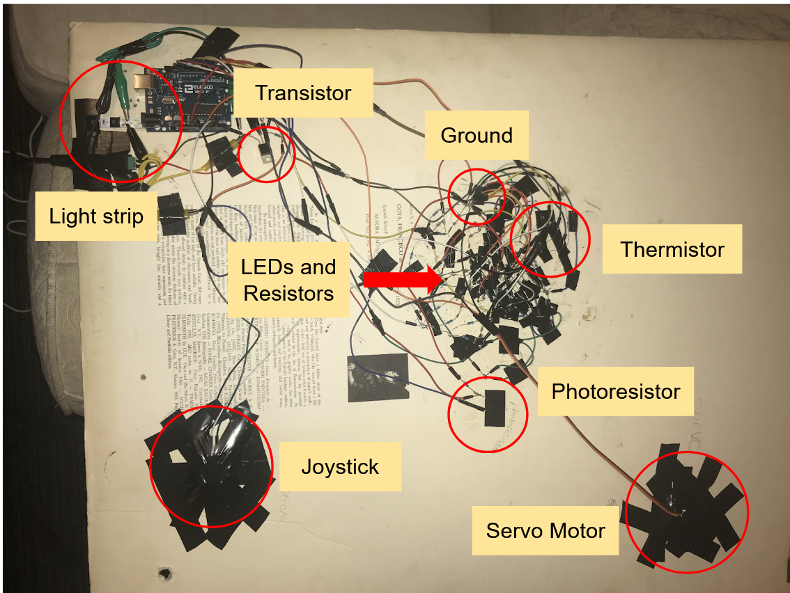

Paisley's Final Project!
For my final project I decided to make an interactive art piece with lights and motors that react to real-world inputs. The art piece I used for this project is a portrait of Senora Sabasa Garcia by 19th century artist Francisco Goya, which I salvaged from the trash in high school.

Concept: Interactive Art Piece
To the left is my original concept sketch. I had many ideas for possible interactions, which are listed next to the sketch. I ranked the interactions from what I thought was most important for my project to least important, and decided my plan would be to go down the list, completing as many interactions as I could before the dealine. I was able to complete the first three interactions: LEDs Reacting to Thermoster, Light Strip Reacting to Photoresistor, and Joystick Controlling Servo Motor.
1: LEDs Reacting to Thermistor
For this interaction, I wired 6 white, red, yellow, green, and blue LEDs that would light up depending on reading by the thermistor. Allow t to be the reading given by the resistor, if:
- t < 645 = white, red, yellow, green, blue on HIGH
- 645 <= t < 655 = red, yellow, green, blue on HIGH; white on LOW
- 655 <= t < 665 = yellow, green, blue on HIGH; white, red on LOW
- 665 <= t < 675 = green, blue on HIGH; white, red, yellow on LOW
- t > 675 = blue on HIGH; white, red, yellow, green on LOW
For all the lights I used 220 ohm resistors because it is higher than the minimum required resistance for these LEDs when connected to the Arduino Uno. For the thermistor I used a 330 ohm resistor because it did not matter what kind of resistor I used (so long as I used one) and the 330 ohm resistor was the one I happened to pick up.
Below is the schematic and math for the resistor.
2: Light Strip Reacting to Photoresistor
For this interaction, I put an LED light strip around the edge of the subject in the portrait. I wanted the light strip to turn on depending on the reading from the photoresistor. Allow p to be the reading from the photoresistor, if:
- p > 400 = light strip on HIGH
- p <= 400 = light strip on LOW
For the photoresistor I used a 10k resistor to save energy, as it doesn't actually matter what resistor you use in this case.
Below is the light strip and photoresistor schematic
3: Joystick Controlling Servo Motor
For this interaction, I attached a servo motor to my art piece and controlled it using a joystick that I also attached. Moving the joystick up or down controls the position of the servo motor. How it works is the reading given by the joystick’s y-axis is multiplied by 0.175 to become a degree of the position on the servo. For example, a joystick reading of 743 puts the servo at the 130-degree mark.
Below is the schematic for the servo and joystick.
Final: Senora Sabasa Garcia
Watch my video demontration here:
video linkHere is the back of the art piece

Here is the code for this project:
int t = 0; // create variable t, assign 0
#include <Servo.h> // import servo
Servo myservo; // create servo object to control a servo
void setup() {
pinMode(A0, INPUT); // initialize A0 as input - thermoster
pinMode(A1, INPUT); // initialize A1 as input - joystick
pinMode(A2, INPUT); // initialize A1 as input - light sensor
pinMode(13, OUTPUT); // initialize pin 13 as output - white LED
pinMode(12, OUTPUT); // initialize pin 12 as output - red LED
pinMode(8, OUTPUT); // initialize pin 8 as output - yellow LED
pinMode(6, OUTPUT); // initialize pin 7 as output - green LED
pinMode(4, OUTPUT); // initialize pin 4 as output - blue LED
pinMode(2, OUTPUT); // initialize pin 2 as output - lightstrip
myservo.attach(11); // attaches the servo on pin 11 to the servo object
}
void loop() {
// servo/joystick code
myservo.write(analogRead(A1) * 0.175); // turn the servo motor that amount analogRead(A1) * 0.175
// light sensor/light strip code
int sensorValue = analogRead(A2); // read the analog in value
int outputValue = map(sensorValue, 500, 900, 255, 0); // map it to the range of the analog out
if (outputValue <= 400){ // if the output value is less than or equal to 400
digitalWrite(2, LOW); // turn lightstrip off
}
if (outputValue > 400){
digitalWrite(2, HIGH); // turn lightstrip on
}
// thermoster/LED code
t = analogRead(A0); // t equals the reading from the thermoster
if (t < 645) { // if the reading from the thermoster is below 70
digitalWrite(13, HIGH); // white light on
digitalWrite(12, HIGH); // red light on
digitalWrite(8, HIGH); // yellow light on
digitalWrite(6, HIGH); // green light on
digitalWrite(4, HIGH); // blue light on
}
if (645 <= t && t < 655) { // if the reading from the thermoster is between 70 and 100
digitalWrite(13, LOW); // white light off
digitalWrite(12, HIGH); // red light on
digitalWrite(8, HIGH); // yellow light on
digitalWrite(6, HIGH); // green light on
digitalWrite(4, HIGH); // blue light on
}
if (655 <= t && t < 665) { // if the reading from the thermoster is between 100 and 130
digitalWrite(13, LOW); // white light off
digitalWrite(12, LOW); // red light off
digitalWrite(8, HIGH); // yellow light on
digitalWrite(6, HIGH); // green light on
digitalWrite(4, HIGH); // blue light on
}
if (665 <= t && t < 675) { // if the reading from the thermoster is between 130 and 160
digitalWrite(13, LOW); // white light off
digitalWrite(12, LOW); // red light off
digitalWrite(8, LOW); // yellow light off
digitalWrite(6, HIGH); // green light on
digitalWrite(4, HIGH); // blue light on
}
if (675 <= t) { // if the reading from the thermoster is above 160
digitalWrite(13, LOW); // white light off
digitalWrite(12, LOW); // red light off
digitalWrite(8, LOW); // yellow light off
digitalWrite(6, LOW); // green light off
digitalWrite(4, HIGH); // blue light on
}
}
Here is the circuitry, I circled and labeled in important stuff.
Some resources I used to help me are:
Thermistor SourcePhotoresistor Source
Another Photoresitor Source
LightStrip Resource
Challenges
- Soldering took a lot longer than expected
- Difficult to keep wires from touching
- Wires/resistors breaking/running out
- Hard to keep track of everything
If I could do this project again I would use less resistors for the LEDs. Each LED doesn't actually need its own resistor.